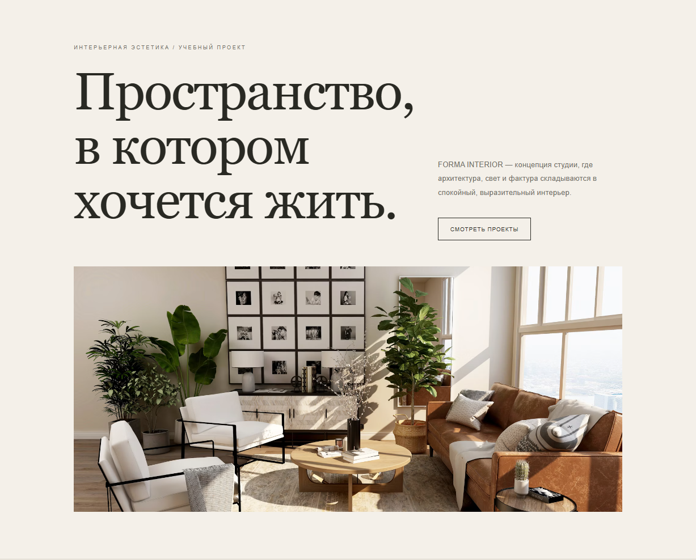
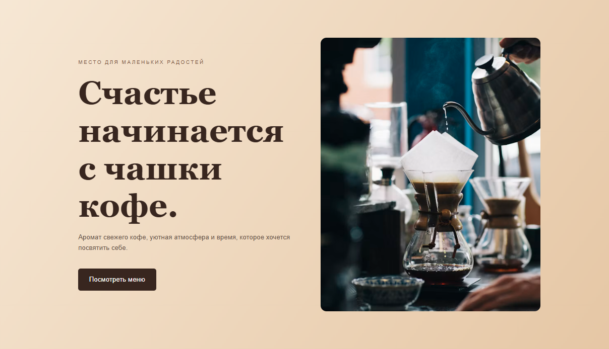

FORMA INTERIOR — дизайн интерьера

Учебный сайт студии дизайна интерьера в журнальной эстетике. Адаптивная вёрстка и демонстрация основных разделов.
Посмотреть сайт FORMA INTERIORИзучаю веб-дизайн и создание сайтов. Здесь собираю учебные проекты, прототипы и результаты своей практики.
Посмотреть проектыЯ осваиваю создание сайтов: от структуры и прототипа до оформления страниц. В работе уделяю внимание понятной навигации, удобству посетителя и аккуратному визуальному решению. Это портфолио будет пополняться по мере обучения и практики.

Учебный сайт студии дизайна интерьера в журнальной эстетике. Адаптивная вёрстка и демонстрация основных разделов.
Посмотреть сайт FORMA INTERIOR
Учебный адаптивный лендинг уютной кофейни в тёплых оттенках. На сайте представлены меню, информация о кофейне и контакты.
Посмотреть сайт «Тёплая чашка»Сейчас я формирую учебное портфолио. Контактные данные и ссылки на профессиональные страницы добавлю после проверки.